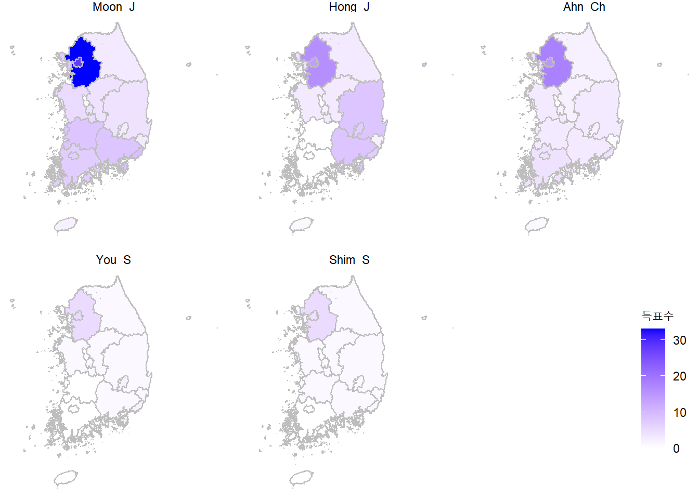
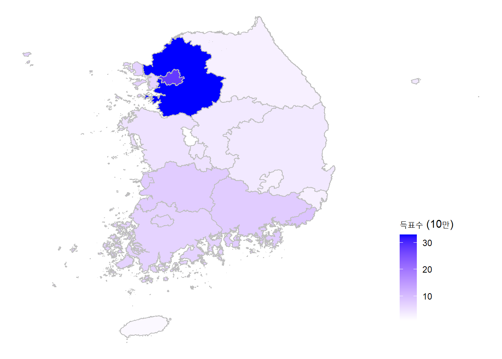
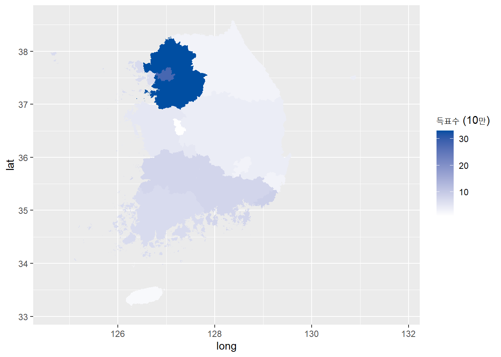
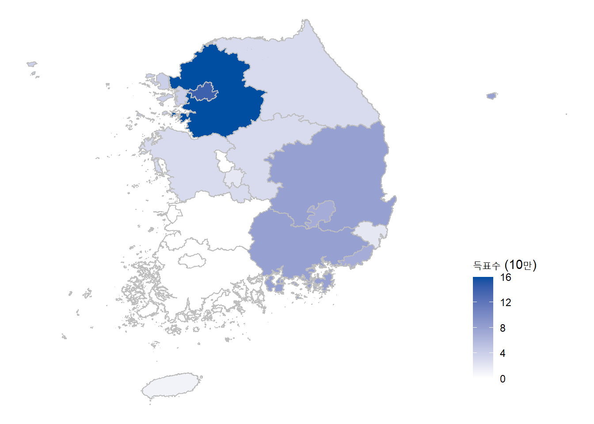
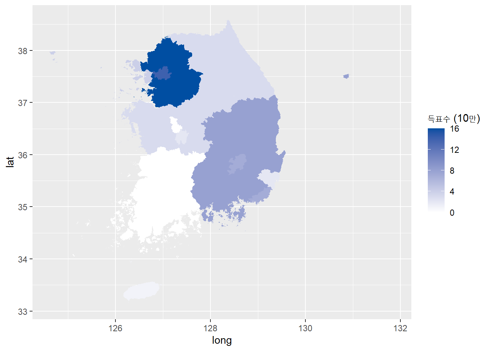
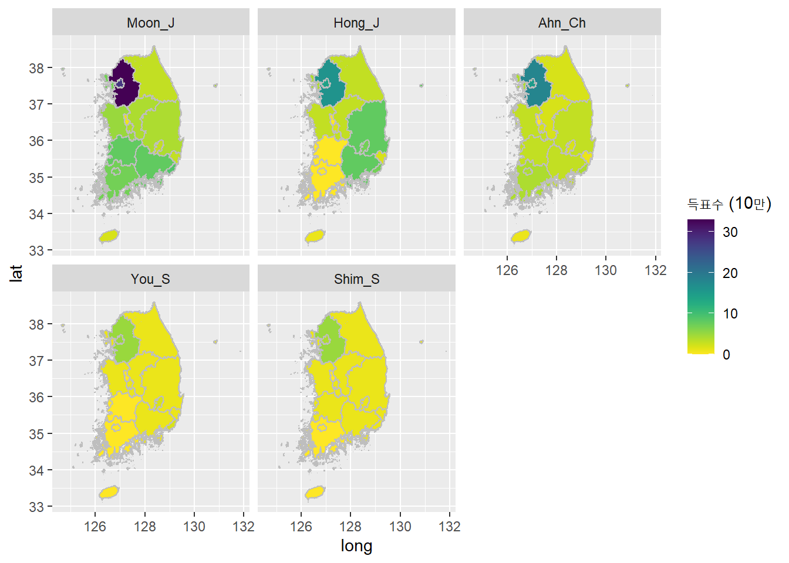

4 득표수 데이터 시각화 : 지도 그리기
사용할 패키지 불러오기
4.1 전체 후보자 득표수 시각화
vote 데이터 세트를 이용하여 후보자별 득표 지도를 한 화면에 표시한다.
이때 facet_wrap(vars(name))을 이용한다.
ggplot() +
geom_polygon(data = vote,
aes(x = long,
y = lat,
group = group,
fill = round(n_vote/100000)), # 득표수
color = "gray") + # 구 경계 테두리 선 색깔
scale_fill_gradient(low = "white",
high = "blue",
space = "Lab",
guide = "colourbar") +
labs(fill = "득표수") +
theme_void() +
theme(legend.position = c(0.95, .25)) +
facet_wrap(vars(name)) # 후보자별 구분
4.2 후보별 득표수 시각화
4.2.1 문재인 후보 득표수
문재인 후보 득표수 데이터 세트 생성
문재인 후보 득표수 지도 그리기
ggplot() +
geom_polygon(data = Vote_Moon,
aes(x = long,
y = lat,
group = group,
fill = round(n_vote/100000)), # 득표수
color = "gray") + # 경계선 색깔
scale_fill_gradient(low = "white",
high = "blue",
space = "Lab",
guide = "colourbar") +
labs(fill = "득표수 (10만)") +
theme_void() +
theme(legend.position = c(.85, .25)) 
ggplot() +
geom_polygon(data=Vote_Moon,
aes(x=long, y=lat,
group=group,
fill = round(n_vote/100000))) +
labs(fill = "득표수 (10만)") +
scale_fill_gradient(low='white', high='#004ea2')
4.2.2 홍준표 후보 득표수
홍준표 후보 득표수 데이터 세트 생성
홍준표 후보 득표수 지도 그리기
ggplot() +
geom_polygon(data = Vote_Hong,
aes(x = long,
y = lat,
group = group,
fill = round(n_vote/100000)),
color = "gray") + # 구 경계 테두리 선 색깔
scale_fill_gradient(low = "white",
high = "#004ea2",
space = "Lab",
guide = "colourbar") +
labs(fill = "득표수 (10만)") +
theme_void() +
theme(legend.position = c(.85, .25)) 
ggplot() +
geom_polygon(data=Vote_Hong,
aes(x=long, y=lat,
group=group,
fill = round(n_vote/100000))) +
labs(fill = "득표수 (10만)") +
scale_fill_gradient(low='white', high='#004ea2')
4.3 viridis 패키지 활용
4.3.1 패키지 불러오기
## Loading required package: viridisLite4.3.2 전체 후보자
ggplot() +
geom_polygon(data = vote,
aes(x = long,
y = lat,
group = group,
fill = round(n_vote/100000)), # 득표수
color = "gray") +
facet_wrap(vars(name)) + # 후보자별 구분
labs(fill = "득표수 (10만)") +
scale_fill_viridis(direction = -1)